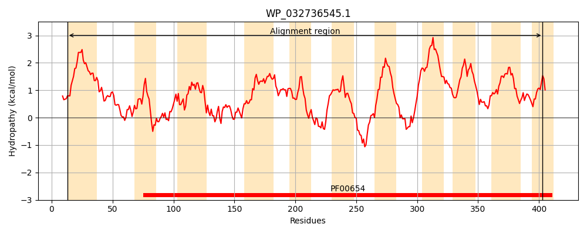
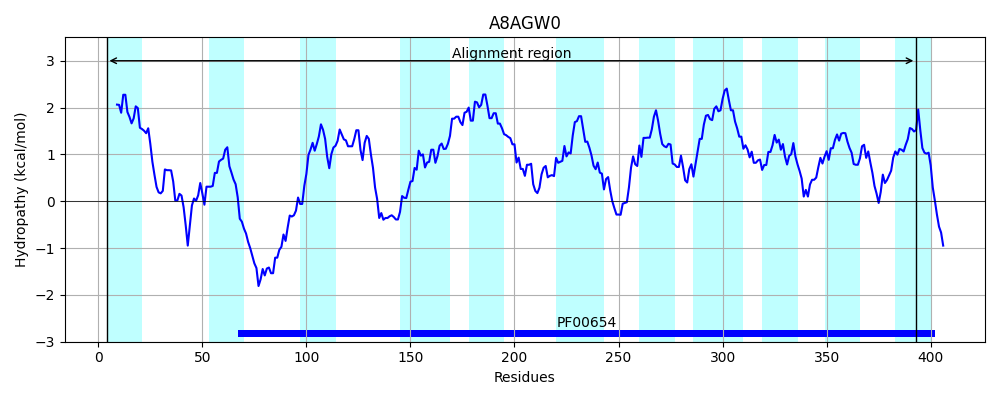

Hit Accession: A8AGW0
Hit TCID: 2.A.49.5.4
Hit Description: gnl|BL_ORD_ID|760 gnl|TC-DB|A8AGW0|2.A.49.5.4 Voltage-gated ClC-type chloride channel ClcB OS=Citrobacter koseri (strain ATCC BAA-895 / CDC 4225-83 / SGSC4696) GN=clcB PE=3 SV=1
Mach Len: 402
e:0.000000
Query TMS Count : 11
Hit TMS Count: 11
TMS-Overlap Score: 8.850000
Predicted Substrates:CHEBI:3731;chloride
BLAST Alignment:
Score: 331 , Bit scores: 132 bits, E-value: 1.8e-34, Alignment length: 402, Percentage identity: 27
Query: 13 RLIAVVLTGILAGLSGMVLALILHAIQHLAFGYSAGQIVGSVSFLQGVTESSWPRRIAAIVAG--GGVAGFGWRLLGRYGQKRVSIAAAVANPSVPMPAGTTTIHALLQIVTVALGSPLGREVAPREMGALGAGMVARKLGLLEDETRTLIACGAGAGLAAVYNVPLAGALFSLEVMLLSFSWEKTLAAIMTSAIAAWTATLGLGDESQYHFVSSTLPHSFLWWAILAGPILGTGA------WLFRKATSA-ARSRVRSNWQMPVFCLLGFSLLAILSLYFPELPGNGKGPMQLALSDGLPLSMVAILLVLKMVVILAVLRGGAEGGLLTPGLAVGGLVSLLLCALWQLGFPGGDKSS--FALVGAAAFLAASMQMPLTAVVLVMEFTHMDHSYLAPALLCA 403
RL+ + GILA L+ + ++ L G +V + + L S W R I V G G +GW+ + + + G + + +L ++ VA GS +GRE A + AL A A++ E E + IACGA AG+A+ Y+ PLAG+LF E++ + ++++ +A T L G + + V +L +A++ L G WL + R ++ WQ+ LG ++ +LSL P + GNG +Q L LS++A + + K++ +LA GA GG+ TP L +G + +L +W PG D+ + L G A LAA+ P+ + +++ E T L P LL A
Sbjct: 4 RLLIATIIGILAALAVAGFRHAMLVLEWLFLRNDTGSLVNAATNL-----SPWRRLITPAVGGLAAGALLWGWQKMNQQRPHAPTDYMEALQTDGQFDYGASLVKSLASLLVVASGSAIGREGAMILLAALAASCFAQRCTPRE-EWKLWIACGAAAGMASAYHAPLAGSLFIAEILFGTLMLASLGPVVISAVVALLTTHLLSGGNALLYTVHLSLDLHVREYAMIISTGLVAGVCGPLFMWLMTTTHNGFIRLKLSPPWQLA----LGGFIVGLLSLLTPAVWGNGYSVVQSFLLSPPLLSVIAGIFICKLLAVLASSGSGAPGGVFTPTLFIGLSIGMLYGRMWGFWLPGADEMAILLGLTGMATLLAATTHAPMMSTLMICEMT--GEYRLLPGLLIA 393 | Protein Hydropathy Plots: |
|---|
|  |  |
Pairwise Alignment-Hydropathy Plot:
|
|---|
 |